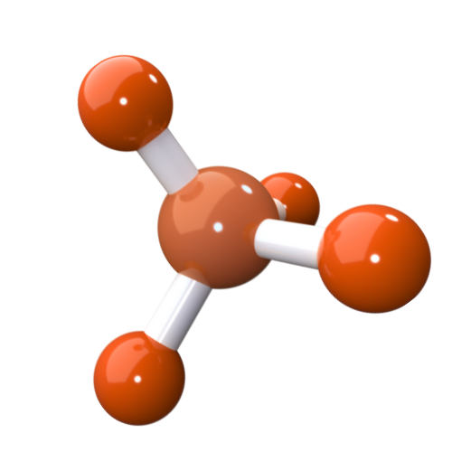

Biophysics is a thriving scientific subject in which experts from a variety of disciplines,
including Mathematics,
Chemistry, Physics, Engineering, Pharmacology, and materials sciences, utilize their expertise
to investigate
and develop new techniques for understanding how the biological sphere works.
Biophysics Bridges Sciences across woven connections,
through its Methodologies & Principles Approaches
QUALITATIVE ANALYSIS
Biophysics uses quantitative tools to investigate biological processes.
Measurements, data analysis, and mathematical modeling are used to gain a fundamental understanding of biological processes.
Itthrives on the amalgamation of principles from physics and biology, recognizing that biological systems exhibit physical properties
and behaviors that can be understood using the tools and concepts of physics.

DATA ANALYSIS AND STRUCTURE
The structure of DNA was determined in 1953 using biophysics.
This discovery was essential in demonstrating how DNA functions as a blueprint for life. Due to this, we can now decode DNA
sequences from thousands of humans as well as other living species. Biophysical approaches are also required for the analysis of
these massive amounts of data.
ECOSYSTEMS
Environmental biophysics assesses and models all parts of the environment.
Environmental biophysicists study the varied microbial populations that inhabit every niche on the globe, monitor pollution
in the atmosphere, and are developing methods to convert algae into biofuels.
MOLECULES IN ACTION
Biophysicists investigate how hormones flow throughout the cell.
Additionally, on how these cells seem to also communicate with each other. Biophysicists have used fluorescent
tags to make cells flash like fireflies under a microscope, revealing information about the cell's complex internal transit system.